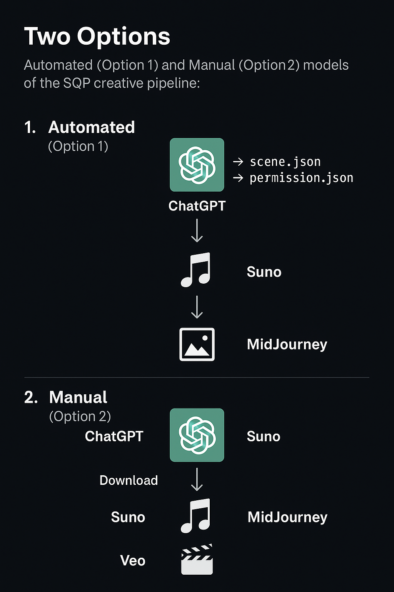

SQ (Synthesis Quotient) enables creative AI tools to operate in sync — via shared scene intent and permission schema.
Fully integrated toolchain where agents read scene.json and permission.json to act in sequence without human handoff:
Each step still reads from the same SQ intent schema, but users manually pass the output between tools:
scene.json and permission.json from GPTAutomated (top) and Manual (bottom) models of the SQ creative pipeline:
scene.json — mood, timing, media, characterspermission.json — who can act, when, and with what limitscue_sheets/ — optional time-based syncing between toolsCurrent Release: v0.1 — July 2025
GitHub: STOIQA/sq-protocol
Agents or tools check scene.json + permission.json, act based on shared timeline, then hand off output — either directly or manually.
This model, introduced in SQIP-0005, supports multi-agent orchestration, where tools can hand off tasks, declare fallbacks, and continue even if one service fails.

Federation Execution Flow: This shows how agent resolution works dynamically across a scene graph with declared priorities and backups.